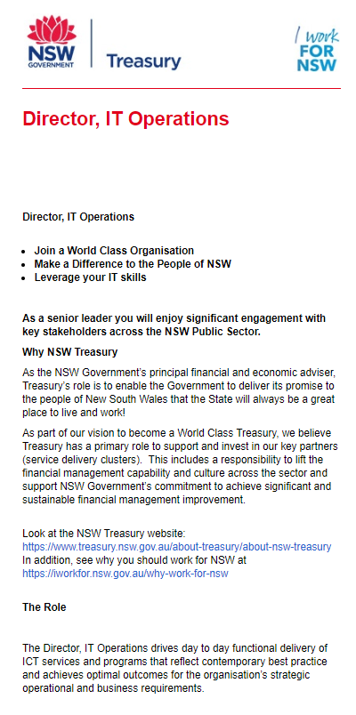

I believe that a Director of IT Operations looks after and manages all aspects of IT in the workplace, in this example the treasury, and is able to bring new pieces of technology that become available and are useful to the business. It makes it appealing to me because I am able to manage an IT workplace to create efficient ways to make everyone’s job easier and I am able to introduce new technologies that assist this
The job requires someone who excels at networking and infrastructure systems, managing multiple sites, implementing and managing cloud bases platforms for things like security and governance, stront technical skills in network administration and system security, managing critical business systems including preventative methods and general admin issue resolving.
I currently have only 6 months experience in general IT related problems which include basic networking and infrasructure skills, basic technical skills in security in terms of camera's, alarms etc. as well as general systems administration.
By studying this course and beginning my degree, I am hoping to learn all the requirements and excel at them to manage an IT related site like the job mentioned. I am also looking to gain more experience and learn more about IT through my current job. I have a good understanding of general IT areas, for example system admin, exchange server. Through more experience working, I hope to be exposed to many facets of the IT world that all contribute to me becomming a well-rounded IT manager who is able to move into greater challenges in the workplace, like my Operations idea job